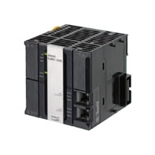

For the common specifications of the NJ-series, refer to the Machine Automation Controller NJ/NX-Series Datasheet.
Building Automation
Industrial Automation
Power Automation & Safety


Bangladesh Distributor
NJ501-1[]20 / NJ101-[][]20
NJ-series Database Connection CPU Units

The NJ-series Machine Automation Controller supports the Database Connection function. Machine data can be quickly stored in a database by connecting the Controller directly to the database.
about this Product Family
Related Contents
- Automation Systems
- Machine Automation Controllers
- Features
- Lineup
- Specifications
- Dimensions
- Catalog
last update: July 01, 2016
General Specification
Performance Specifications
| Item | NJ501- | NJ101- | |||||
|---|---|---|---|---|---|---|---|
| 1520 | 1420 | 1320 | 1020 | 9020 | |||
| Programming | Memory for CJ-Series
Units (Can be Specified with AT Specifications for Variables.) |
EM Area | 32,768 words ✕ 25 banks *
(E0_00000 to E18_32767) |
32,768 words ✕ 4 banks *
(E0_0 to E3_32767) |
|||
* When the Spool function of the NJ501-1[]20 is enabled, the DB Connection Service uses E9_0 to E18_32767.
When the Spool function of the NJ101-[][]20 is enabled, the DB Connection Service uses E1_0 to E3_32767.
Furthermore, for the common specifications of the NJ-series, refer to to the Machine Automation Controller NJ/NX-Series Datasheet.
Refer to the specifications of the NJ501-[]5[]0 for those of the NJ501-1520, the NJ501-[]4[]0 for the NJ501-1420, the NJ501-[]3[]0 for the NJ501- 1320, the 101-1020 for the NJ101-1[][]0 and the 101-9020 for the NJ101-9[][]0.
Function Specifications
| Item | NJ501-1[]20 | NJ101-[][]20 | |||
|---|---|---|---|---|---|
| Ver.1.07 or ealier | Ver.1.08 or later | ||||
| Debugging | Data Tracing | Maximum number of
simultaneous data traces |
4 | 2 | 2 |
Furthermore, for the common specifications of the NJ-series, refer to the Machine Automation Controller NJ/NX-Series Datasheet.
Functions Supported by NJ501-[][]20 or NJ101-[]020
Besides functions of the NJ501-1[]00 or NJ101-[][]00, functions supported by the NJ501-[][]20 or NJ101-[]020 are as follows.
| Item | Description | ||
|---|---|---|---|
| NJ501-1[]20 | NJ101-[][]20 | ||
| Supported port | Built-in EtherNet/IP port | ||
| Supported DB | Microsoft Corporation: SQL Server 2008/2008 R2/2012/2014 *1
Oracle Corporation: Oracle Database 10g /11g/12c *1 MySQL Community Edition 5.1/5.5/5.6 *2 International Business Machines Corporation (IBM): DB2 for Linux, UNIX and Windows 9.5/9.7/10.1/10.5 Firebird Foundation Incorporated: Firebird 2.1/2.5 The PostgreSQL Global Development Group: PostgreSQL 9.2/9.3/9.4 *1 |
||
| Number of DB Connections
(Number of databases that can be connected at the same time) |
3 connections max. *3 | 1 | |
| Instruction | Supported
operations |
The following operations can be performed by executing DB Connection
Instructions in the NJ-series CPU Units. Inserting records (INSERT), Updating records (UPDATE), Retrieving records (SELECT), and Deleting records (DELETE) |
|
| Number of
columns in an INSERT operation |
SQL Server: 1,024 columns max.
Others: 1,000 columns max. |
||
| Number of
columns in an UPDATE operation |
SQL Server: 1,024 columns max.
Others: 1,000 columns max. |
||
| Number of
columns in a SELECT operation |
SQL Server: 1,024 columns max.
Others: 1,000 columns max. |
||
| Number of
records in the output of a SELECT operation |
65,535 elements max., 4 MB max. | ||
| Run mode of the DB
Connection Service |
Operation Mode or Test Mode
• Operation Mode: When each instruction is executed, the service actually accesses the DB. • Test Mode: When each instruction is executed, the service ends the instruction normally without accessing the DB actually. |
||
| Spool function | Used to store SQL statements when an error occurred and resend the statements when the
communications are recovered from the error. Spool capacity: 1 MB *2 |
||
| Spool capacity | 1 MB *4 | 192 KB *4 | |
| Operation Log function | The following three types of logs can be used.
• Execution Log: Log for tracing the executions of the DB Connection Service. • Debug Log: Detailed log for SQL statement executions of the DB Connection Service. • SQL Execution Failure Log: Log for execution failures of SQL statements due to a DB-caused factor. |
||
| DB Connection Service
shutdown function |
Used to shut down the DB Connection Service after automatically saving the Operation Log files into
the SD Memory Card. |
||
*1. SQL Server 2014, Oracle Database 12c and PostgreSQL 9.2/9.3/9.4 are supported by DBCon version 1.02 or higher.
*2. The supported storage engines of the DB are InnoDB and MyISAM.
*3. When two or more DB Connections are established, the operation cannot be guaranteed if you set different
database types for the connections.
*4. Refer to "NJ-series Database Connection CPU Units User's Manual(W527)" for the information.
Unit Versions
| Units | Models | Unit Version | DBCon Version |
|---|---|---|---|
| NJ-series Database
Connection CPU Units |
NJ501-1[]20 | Unit version 1.11
Unit version 1.10 |
DBCon Ver.1.02
DBCon Ver.1.01 |
| Unit version 1.09
Unit version 1.08 |
DBCon Ver.1.01 | ||
| Unit version 1.07
Unit version 1.05 |
DBCon Ver.1.00 | ||
| NJ101-[][]20 | Unit version 1.10 | DBCon Ver.1.02 |
Unit Versions, DBCon Versions and Programming Devices
The following table gives the relationship between unit versions of CPU Units and the corresponding Sysmac Studio versions.
| Unit version of CPU Unit | DBCon Version | Corresponding version of Sysmac Studio |
|---|---|---|
| 1.12 | 1.02 | 1.16 |
| 1.11 | 1.15 | |
| 1.10 * | 1.14 | |
| 1.01 | 1.13
1.12 |
|
| 1.09 | 1.11
1.10 |
|
| 1.08 | 1.09 | |
| 1.07 | 1.00 | 1.08 |
| 1.05 | 1.07
1.06 |
* For NJ101-[][]20, Supported only by the Sysmac Studio version 1.14 or higher.
Functions That Were Added or Changed for Each Unit Version and Sysmac Studio Version
For the common specifications of the NJ-series, refer to the Machine Automation Controller NJ/NX-Series Datasheet.
last update: July 01, 2016